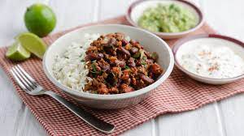

Chilli

Description
This is a Mexican saucy, meat based dish with beans and spices (served with rice).
Ingredients
- 1 large onion
- 1 red pepper
- 2 garlic cloves
- 1 tbsp oil
- 1 heaped tsp hot chilli powder (or 1 level tbsp if you only have mild)
- 1 heaped tsp hot chilli powder (or 1 level tbsp if you only have mild)
- 1 tsp ground cumin
- 500g lean minced beef
- 1 beef stock cube
- 400g can chopped tomatoes
- ½ tsp dried marjoram
- 1 tsp sugar (or add a thumbnail-sized piece of dark chocolate along with the beans instead, see tip)
- 2 tbsp tomato purée
- 410g can red kidney beans
- plain boiled long grain rice , to serve
Steps
- Prepare your vegetables. Chop 1 large onion into small dice, about 5mm square.
- Cut 1 red pepper in half lengthways, remove stalk and wash the seeds away, then chop.
- Put your pan on the hob over a medium heat.
- Add the onion and cook, stirring fairly frequently.
- Add all spices
- Give it a good stir, then leave it to cook for another 5 minutes.
- Brown 500g lean minced beef.
- Make the sauce. Crumble 1 beef stock cube into 300ml hot water.
- Add a 400g can of chopped tomatoes and seasoning.
- Simmer it gently for 20 mins.
- Drain and rinse a 410g can of red kidney beans in a sieve and stir them into the chilli pot.
- Season more.
- Now replace the lid, turn off the heat and leave your chilli to stand for 10 minutes before serving
- Serve with soured cream and plain boiled long grain rice.